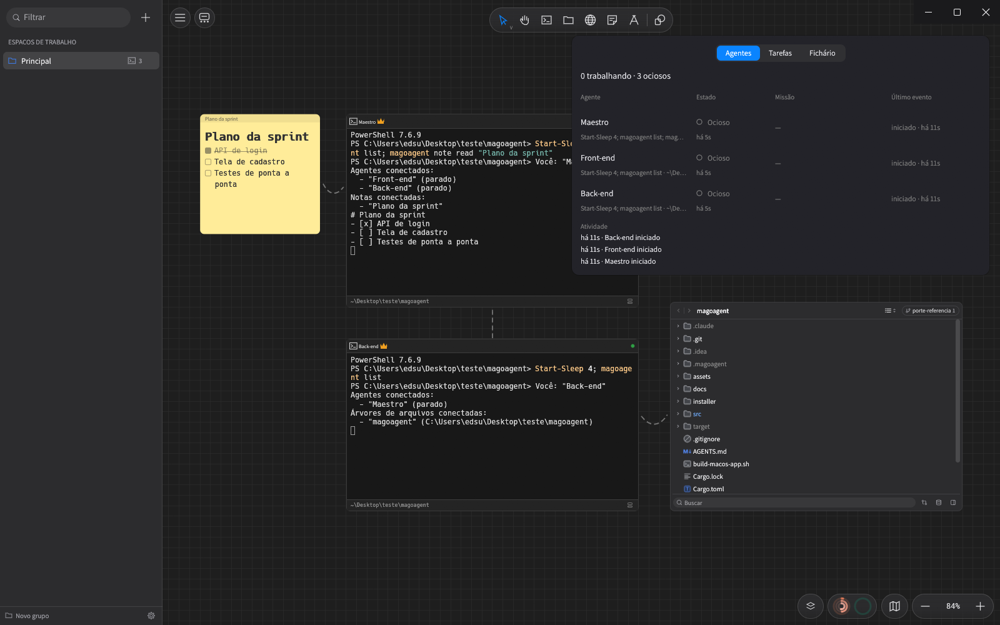
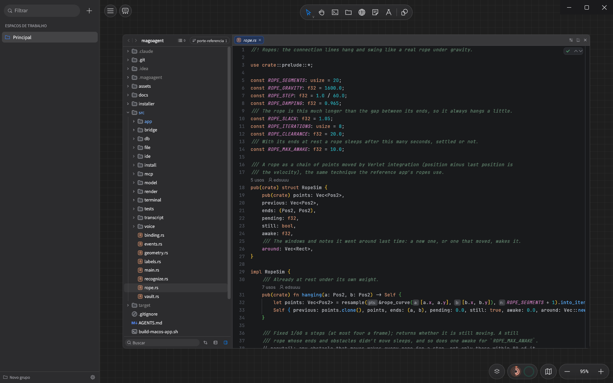
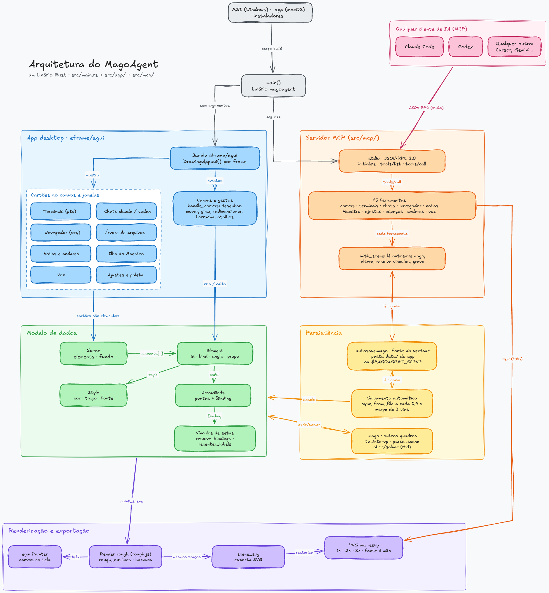

Terminais de verdade
zsh, bash ou PowerShell com cores e acentos, e um agente rodando dentro. Cada terminal tem nome, cor e pasta.
Um quadro infinito onde Claude Code, Codex e qualquer CLI trabalham em terminais de verdade, ligados por cordas às notas, páginas e projetos de que precisam.
Você desenha o plano, liga as peças com uma corda e os agentes enxergam o que está ligado: conversam entre si, recrutam ajudantes e avisam quando precisam de você.
zsh, bash ou PowerShell com cores e acentos, e um agente rodando dentro. Cada terminal tem nome, cor e pasta.
Uma corda entre duas coisas diz quem fala com quem. Pelo terminal, magoagent ask manda um pedido a outro agente.
Formas com traço à mão, setas presas, texto, imagens e minimapa. A IA desenha no quadro, traço a traço.
Converse com Claude Code ou Codex num cartão de chat, sem terminal, com as ferramentas do app já ligadas.
Páginas abertas sobre o canvas. O agente circula trechos, lê o console e recebe os seus comentários.
A pasta do projeto vira um cartão com git (ramos, diff, autor), editor com realce e Localizar.



Uma pílula fixa por cima de todas as janelas, onde a Luna mora. Fechada, mostra uma chaminha por agente com o estado de cada um. Os olhos dela seguem o cursor e, com música tocando, ela dança.
Fale com a Luna pelo chat ou numa chamada de voz ("Ok Mago, …"). Ela rege o time pelas mesmas ferramentas que você usa no app.
O app traz um servidor MCP embutido: qualquer IA lê e desenha no quadro, fala com agentes, usa o navegador e monta equipes.
claude mcp add magoagent -- /caminho/para/magoagent mcp
Escolha o seu sistema.
Instala em C:\Program Files\MagoAgent. Ajustes › Sobre › Atualizar baixa o MSI novo.
Adicione o repositório uma vez e instale; as atualizações vêm pelo apt.
curl -fsSL https://edsuuu.github.io/magoagent/apt/magoagent.gpg | sudo tee /usr/share/keyrings/magoagent.gpg > /dev/null
echo "deb [arch=amd64 signed-by=/usr/share/keyrings/magoagent.gpg] https://edsuuu.github.io/magoagent/apt ./" | sudo tee /etc/apt/sources.list.d/magoagent.list
sudo apt update && sudo apt install magoagentPara as outras distribuições: extraia e rode o magoagent.
Em breve.